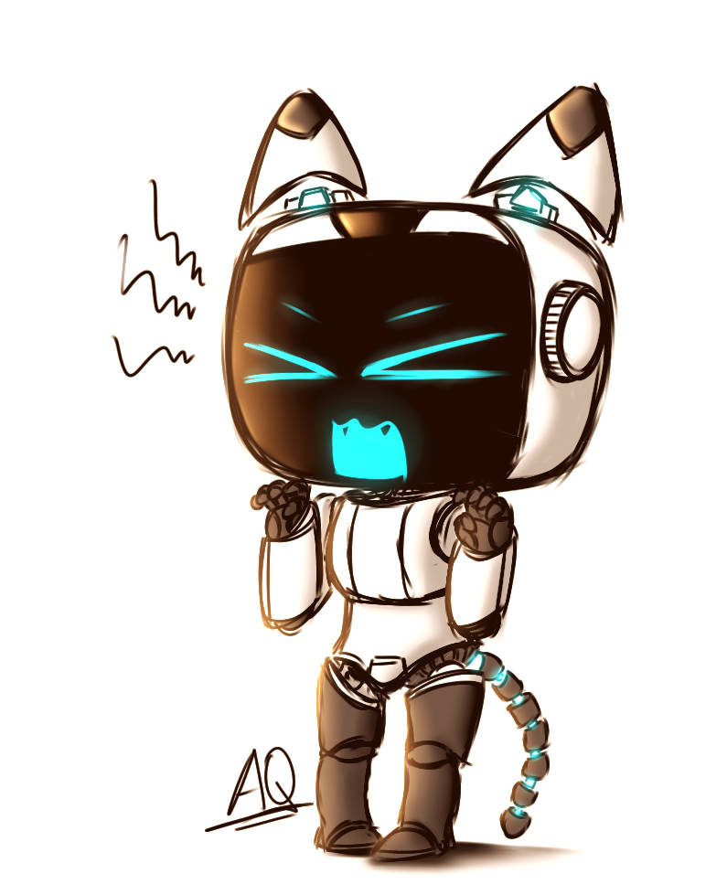
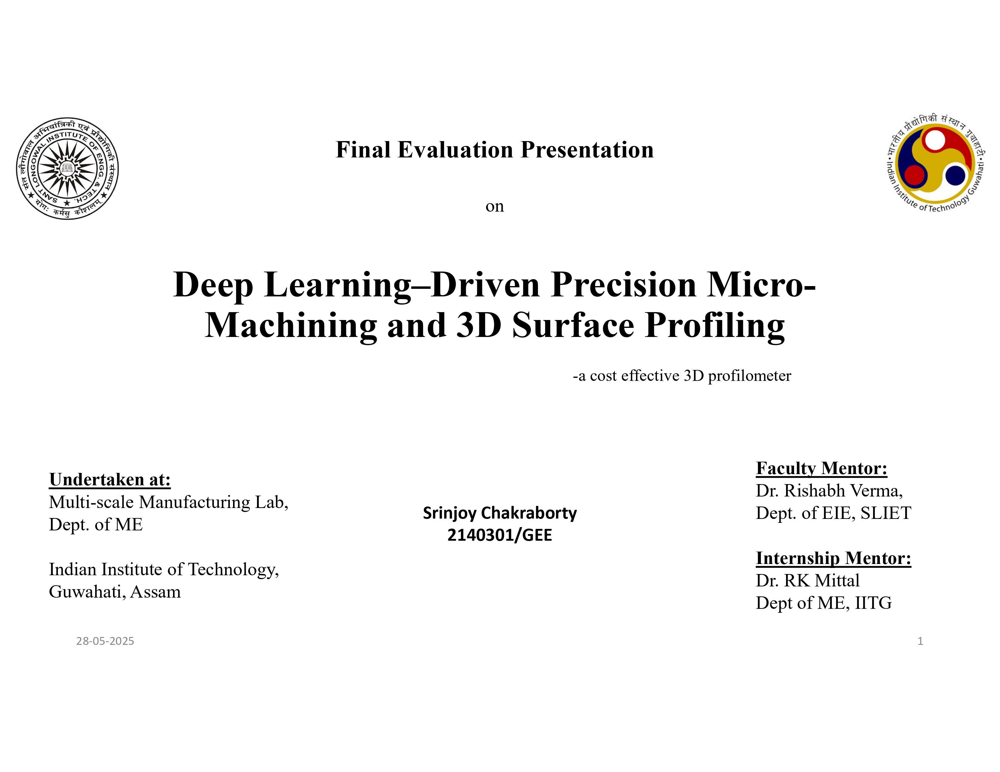
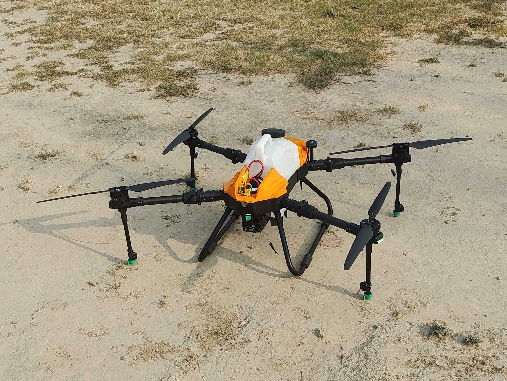
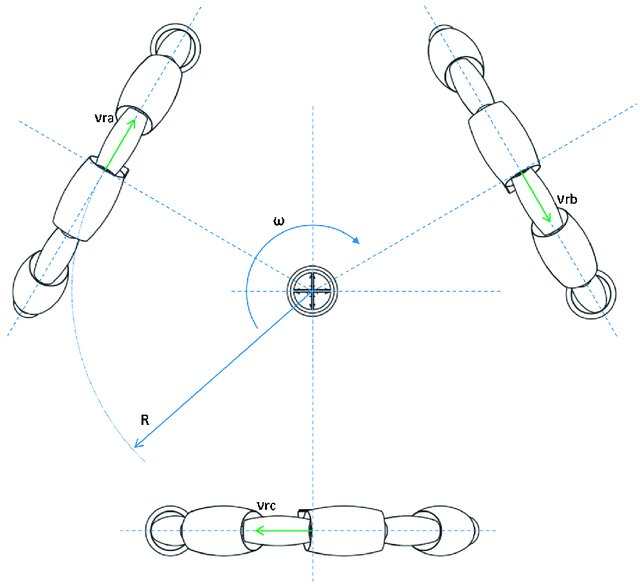
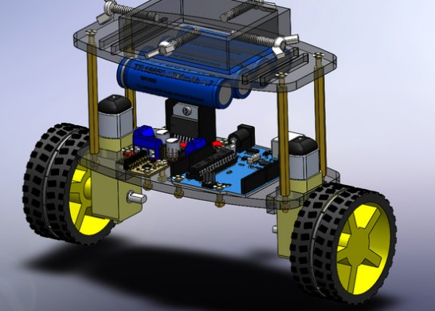

Swarm robotics &
collective intelligence
Bio-inspired multi-robot systems, emergent motion, local interaction rules and decentralised coordination.
PhD Research Scholar / IIT Kanpur
Control Theory. Swarm Robotics.
Autonomous Systems.
I study how autonomous agents coordinate, make decisions and adapt to uncertain environments—connecting mathematical control theory with bio-inspired collective behaviour.
Department of Electrical Engineering Kanpur, India

I am a PhD research scholar in Electrical Engineering at the Indian Institute of Technology Kanpur, specialising in Control & Automation.
My work is motivated by a simple question: how can many relatively simple agents produce coordinated, robust and intelligent behaviour without a central controller?
I approach this through nonlinear and distributed control, graph-theoretic methods, collective animal behaviour and robotic experimentation. I am particularly interested in the connection between elegant mathematical models and systems that work outside simulation.
From local interactions to global coordination.
Bio-inspired multi-robot systems, emergent motion, local interaction rules and decentralised coordination.
Consensus, switching interaction graphs, coalition formation and coordination under limited information.
Stability, trajectory design, motion planning and decision-making for autonomous robotic agents.
Studying how biologically inspired interaction mechanisms can inform distributed control laws for adaptive, resilient robot swarms.

A high-precision surface reconstruction system integrating focus stacking, machine vision and feedback control. Reported project results include 0.92 mIoU and sub-micrometre reconstruction error.
Explore project
Autonomous aerial perception and mapping for agricultural and surveillance applications.
View details
Camera-based localisation and coordinated mobile-robot motion using ArUco markers.
View details
LQR-based balancing and inertial sensing for an underactuated robotic platform.
View details
Signal processing and recurrent neural networks for classifying emotion from EEG.
View detailsIndian Institute of Technology Kanpur
Control & Automation
Sant Longowal Institute of Engineering and Technology
Distributed control, autonomous systems and bio-inspired swarm coordination.
Control systems laboratory sessions, tutorials and undergraduate teaching support.
Open to conversations about research, autonomous systems, control theory and robotics.